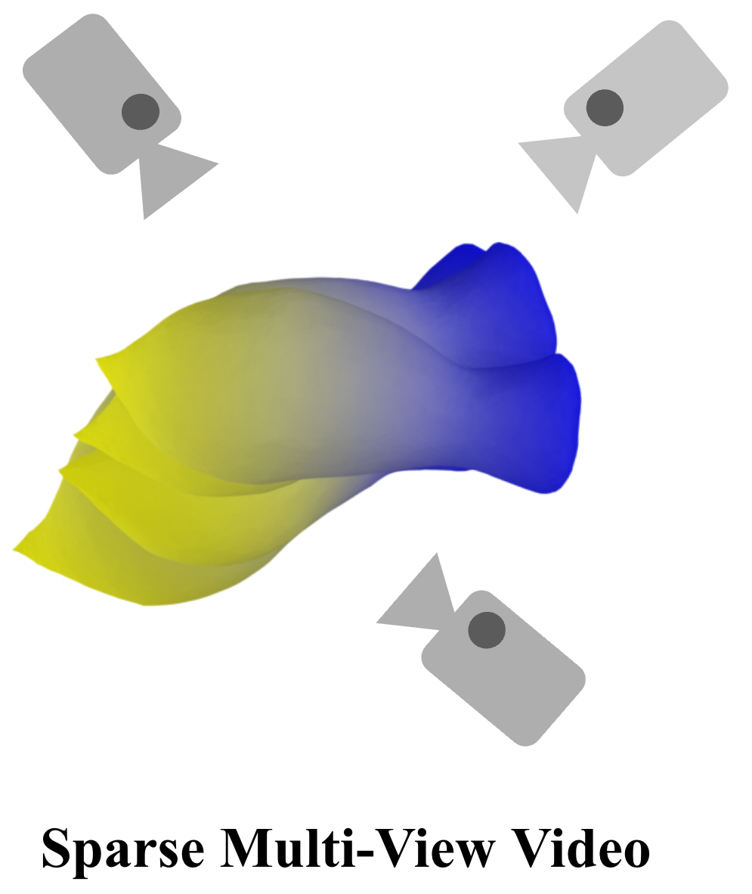
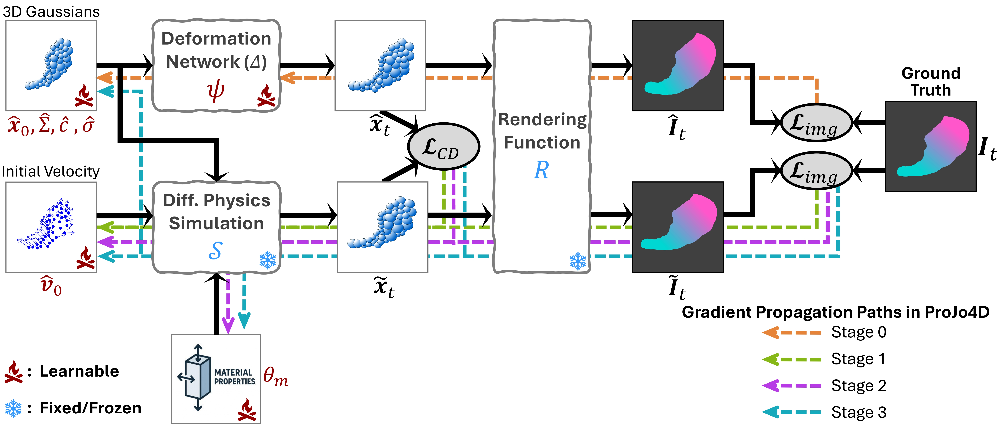

| Method | torus | cross | cream | apple | paste | chess | banana | mean | |
|---|---|---|---|---|---|---|---|---|---|
| CD ↓ | Spring-Gaus | 15.00 | 40.30 | 2.97 | 12.12 | 73.08 | 3.68 | 51.35 | 26.93 |
| GIC | 9.48 | 4.03 | 12.67 | 6.50 | 53.66 | 6.64 | 2.00 | 13.57 | |
| Ours | 0.79 | 0.33 | 0.81 | 0.17 | 3.46 | 0.92 | 0.31 | 0.97 | |
| EMD ↓ | Spring-Gaus | 0.177 | 0.232 | 0.101 | 0.170 | 0.248 | 0.097 | 0.223 | 0.178 |
| GIC | 0.106 | 0.112 | 0.182 | 0.143 | 0.219 | 0.129 | 0.056 | 0.135 | |
| Ours | 0.039 | 0.033 | 0.044 | 0.021 | 0.102 | 0.060 | 0.026 | 0.046 | |
| PSNR ↑ | Spring-Gaus | 13.01 | 11.24 | 14.62 | 17.03 | 10.94 | 13.85 | 15.79 | 13.78 |
| GIC | 15.18 | 21.89 | 13.53 | 19.19 | 12.68 | 14.83 | 23.22 | 17.22 | |
| Ours | 19.87 | 28.76 | 20.08 | 28.75 | 16.76 | 17.90 | 27.24 | 22.77 | |
| SSIM ↑ | Spring-Gaus | 0.831 | 0.819 | 0.796 | 0.790 | 0.737 | 0.792 | 0.825 | 0.799 |
| GIC | 0.872 | 0.882 | 0.781 | 0.844 | 0.788 | 0.825 | 0.923 | 0.845 | |
| Ours | 0.925 | 0.943 | 0.890 | 0.931 | 0.866 | 0.881 | 0.949 | 0.912 | |
| MAE log₁₀E ↓ | GIC | 0.0662 | 0.4524 | 1.7137 | 0.0508 | 0.0376 | 0.2323 | 0.0526 | 0.3722 |
| Ours | 0.0161 | 0.0867 | 0.0112 | 0.0345 | 0.0249 | 0.0929 | 0.0020 | 0.0383 | |
| MAE ν ↓ | GIC | 0.7093 | 0.1712 | 0.2167 | 0.2463 | 0.0799 | 0.0676 | 0.8656 | 0.3367 |
| Ours | 0.7333 | 0.0241 | 0.0247 | 0.0583 | 0.0896 | 0.0879 | 0.4736 | 0.2131 |
Ground Truth
ProJo4D (Ours)
GIC
Spring-Gaus
| Method | torus | cross | cream | apple | paste | chess | banana | mean | |
|---|---|---|---|---|---|---|---|---|---|
| CD ↓ | PAC-NeRF | 2.47 | 3.87 | 2.21 | 4.69 | 37.70 | 8.20 | 66.43 | 17.94 |
| Spring-Gaus | 2.38 | 1.57 | 2.22 | 1.87 | 7.03 | 2.59 | 18.48 | 5.16 | |
| GIC | 0.75 | 1.09 | 0.94 | 0.22 | 2.79 | 0.77 | 0.12 | 0.95 | |
| Ours | 0.16 | 0.11 | 0.86 | 0.14 | 1.85 | 0.26 | 0.11 | 0.50 | |
| EMD ↓ | PAC-NeRF | 0.055 | 0.111 | 0.083 | 0.108 | 0.192 | 0.155 | 0.234 | 0.134 |
| Spring-Gaus | 0.087 | 0.051 | 0.094 | 0.076 | 0.126 | 0.095 | 0.135 | 0.095 | |
| GIC | 0.034 | 0.058 | 0.050 | 0.030 | 0.096 | 0.059 | 0.017 | 0.049 | |
| Ours | 0.024 | 0.017 | 0.044 | 0.018 | 0.064 | 0.029 | 0.019 | 0.031 | |
| PSNR ↑ | PAC-NeRF | 17.46 | 14.15 | 15.37 | 19.94 | 12.32 | 15.08 | 16.04 | 15.77 |
| Spring-Gaus | 16.83 | 16.93 | 15.42 | 21.55 | 14.71 | 16.08 | 17.89 | 17.06 | |
| GIC | 20.24 | 30.51 | 19.15 | 26.89 | 16.31 | 18.44 | 29.29 | 22.98 | |
| Ours | 25.75 | 37.54 | 21.04 | 36.83 | 20.84 | 23.88 | 29.44 | 27.90 | |
| SSIM ↑ | PAC-NeRF | 0.913 | 0.906 | 0.858 | 0.878 | 0.819 | 0.848 | 0.886 | 0.870 |
| Spring-Gaus | 0.919 | 0.940 | 0.862 | 0.902 | 0.872 | 0.881 | 0.904 | 0.897 | |
| GIC | 0.942 | 0.939 | 0.909 | 0.948 | 0.894 | 0.912 | 0.964 | 0.930 | |
| Ours | 0.966 | 0.980 | 0.921 | 0.983 | 0.922 | 0.948 | 0.965 | 0.955 | |
| MAE log₁₀E ↓ | GIC | 0.0039 | 0.1115 | 0.0074 | 0.0544 | 0.0474 | 0.5616 | 0.0572 | 0.1205 |
| Ours | 0.1258 | 0.0904 | 0.0040 | 0.0197 | 0.0679 | 0.1153 | 0.0355 | 0.0655 | |
| MAE ν ↓ | GIC | 0.0142 | 0.0171 | 0.0082 | 0.0205 | 0.0086 | 0.0480 | 0.1841 | 0.0430 |
| Ours | 0.0182 | 0.0570 | 0.0057 | 0.0060 | 0.0381 | 0.0880 | 0.0885 | 0.0431 |
Ground Truth
ProJo4D (Ours)
GIC
Spring-Gaus
| Elasticity | Newtonian | Non-Newtonian | Plasticine | Sand | ||
|---|---|---|---|---|---|---|
| CD ↓ | GIC | 5.512 ± 3.311 | 0.537 ± 0.315 | 0.689 ± 0.398 | 2.012 ± 1.797 | 20.262 ± 43.360 |
| Ours | 0.982 ± 0.350 | 0.349 ± 0.147 | 0.530 ± 0.269 | 1.022 ± 0.719 | 0.413 ± 0.201 | |
| EMD ↓ | GIC | 0.126 ± 0.041 | 0.103 ± 0.007 | 0.040 ± 0.007 | 0.062 ± 0.027 | 0.122 ± 0.162 |
| Ours | 0.041 ± 0.006 | 0.039 ± 0.004 | 0.038 ± 0.005 | 0.046 ± 0.011 | 0.042 ± 0.009 | |
| MAE v₀ ↓ | GIC | 0.008 ± 0.004 | 0.009 ± 0.004 | 0.015 ± 0.008 | 0.010 ± 0.005 | 0.007 ± 0.004 |
| Ours | 0.010 ± 0.006 | 0.005 ± 0.002 | 0.006 ± 0.003 | 0.009 ± 0.007 | 0.003 ± 0.002 | |
| MAE log₁₀(E) ↓ | GIC | 0.189 ± 0.217 | N/A | N/A | 1.597 ± 1.150 | N/A |
| Ours | 0.087 ± 0.074 | N/A | N/A | 0.892 ± 0.683 | N/A | |
| MAE ν ↓ | GIC | 0.123 ± 0.103 | N/A | N/A | 0.134 ± 0.112 | N/A |
| Ours | 0.106 ± 0.097 | N/A | N/A | 0.158 ± 0.078 | N/A | |
| MAE log₁₀(μ) ↓ | GIC | N/A | 0.103 ± 0.125 | 0.869 ± 0.598 | N/A | N/A |
| Ours | N/A | 0.071 ± 0.069 | 0.937 ± 0.602 | N/A | N/A | |
| MAE log₁₀(κ) ↓ | GIC | N/A | 3.180 ± 1.085 | 0.725 ± 0.704 | N/A | N/A |
| Ours | N/A | 1.900 ± 1.347 | 0.722 ± 0.913 | N/A | N/A | |
| MAE log₁₀(τY) ↓ | GIC | N/A | N/A | 0.069 ± 0.069 | 0.327 ± 0.365 | N/A |
| Ours | N/A | N/A | 0.032 ± 0.018 | 0.132 ± 0.172 | N/A | |
| MAE log₁₀(η) ↓ | GIC | N/A | N/A | 0.519 ± 0.264 | N/A | N/A |
| Ours | N/A | N/A | 0.507 ± 0.252 | N/A | N/A | |
| MAE θfric ↓ | GIC | N/A | N/A | N/A | N/A | 6.785 ± 8.458 |
| Ours | N/A | N/A | N/A | N/A | 0.903 ± 0.557 |
Ground Truth
ProJo4D (Ours)
GIC
| bun | burger | dog | pig | potato | mean | ||
|---|---|---|---|---|---|---|---|
| PSNR ↑ | Spring-Gaus | 26.79 | 35.13 | 30.31 | 31.95 | 28.96 | 30.63 |
| GIC | 31.96 | 35.41 | 31.26 | 35.38 | 34.63 | 33.73 | |
| Ours | 32.14 | 38.55 | 34.65 | 38.35 | 39.33 | 36.60 | |
| SSIM ↑ | Spring-Gaus | 0.986 | 0.995 | 0.993 | 0.994 | 0.989 | 0.991 |
| GIC | 0.993 | 0.993 | 0.993 | 0.995 | 0.991 | 0.993 | |
| Ours | 0.994 | 0.995 | 0.995 | 0.996 | 0.995 | 0.995 |
Ground Truth
ProJo4D (Ours)
GIC
@article{rho2025projo4d,
title = {ProJo4D: Progressive Joint Optimization for Sparse-View Inverse Physics Estimation},
author = {Daniel Rho and Jun Myeong Choi and Biswadip Dey and Roni Sengupta},
journal={arXiv preprint arXiv:2506.05317},
year={2025}
}